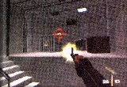

Pas grand-chose à se mettre sous la dent, si ce n'est quelques Images... L'une montre le Bunker, et Bond a un Laser ! Ceci confirme la Théorie comme quoi cette Arme était assez présente dans le Jeu au Début. Une autre montre l'ancien KF7 Soviet (voir Armes Beta) avec la Cible, mais PAS de Zoom !! La Crampe que ç'aurait été sans Zoom !! Une troisième montre la Cinématique de Début, sauf que Bond a son Costume, pas la Combinaison Noire de la Version Finale.



Dans le Bunker 1, on a des Russian Soldiers, et dans le Second des Arctic Commandos. C'est simple à retenir pour voir dans quel Bunker a été prise la Photo. Avec le Debug Mode, on peut visiter le Fameux Bunker Vide. En fait, il semblerait que le Costume de Bond de ces photos ait été un des Premiers à avoir été créé, et il apparait donc sur beaucoup de Photos Beta. On peut aussi faire apparaitre des Alarmes Beta !